Chapter 27: Introduction to Animal Diversity¶
Introduction¶
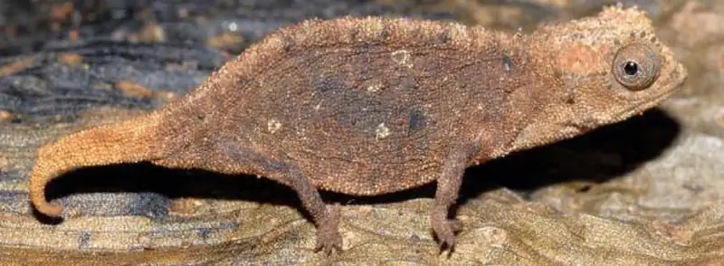
Animal evolution began in the ocean over 600 million years ago with tiny creatures that probably do not resemble any living organism today. Since then, animals have evolved into a highly diverse kingdom. Although over one million extant (currently living) species of animals have been identified, scientists are continually discovering more species as they explore ecosystems around the world. The number of extant species is estimated to be between 3 and 30 million.
But what is an animal? While we can easily identify dogs, birds, fish, spiders, and worms as animals, other organisms, such as corals and sponges, are not as easy to classify. Animals vary in complexity—from sea sponges to crickets to chimpanzees—and scientists are faced with the difficult task of classifying them within a unified system. They must identify traits that are common to all animals as well as traits that can be used to distinguish among related groups of animals. The animal classification system characterizes animals based on their anatomy, morphology, evolutionary history, features of embryological development, and genetic makeup. This classification scheme is constantly developing as new information about species arises. Understanding and classifying the great variety of living species help us better understand how to conserve the diversity of life on earth.
27.1 Features of the Animal Kingdom¶
Learning Objectives
By the end of this section, you will be able to do the following:
- List the features that distinguish the kingdom Animalia from other kingdoms
- Explain the processes of animal reproduction and embryonic development
- Describe the roles that Hox genes play in development
Two different groups within the Domain Eukaryota have produced complex multicellular organisms: The plants arose within the Archaeplastida, whereas the animals (and their close relatives, the fungi) arose within the Opisthokonta. However, plants and animals not only have different life styles, they also have different cellular histories as eukaryotes. The opisthokonts share the possession of a single posterior flagellum in flagellated cells, e.g., sperm cells.
Most animals also share other features that distinguish them from organisms in other kingdoms. All animals require a source of food and are therefore heterotrophic, ingesting other living or dead organisms. This feature distinguishes them from autotrophic organisms, such as most plants, which synthesize their own nutrients through photosynthesis. As heterotrophs, animals may be carnivores, herbivores, omnivores, or parasites (Figure 27.2a,b). As with plants, almost all animals have a complex tissue structure with differentiated and specialized tissues. The necessity to collect food has made most animals motile, at least during certain life stages. The typical life cycle in animals is diplontic (like you, the diploid state is multicellular, whereas the haploid state is gametic, such as sperm or egg). We should note that the alternation of generations characteristic of the land plants is typically not found in animals. In animals whose life histories include several to multiple body forms (e.g., insect larvae or the medusae of some Cnidarians), all body forms are diploid. Animal embryos pass through a series of developmental stages that establish a determined and fixed body plan. The body plan refers to the morphology of an animal, determined by developmental cues.
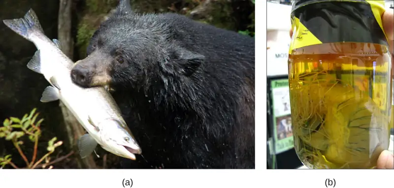
Complex Tissue Structure¶
Many of the specialized tissues of animals are associated with the requirements and hazards of seeking and processing food. This explains why animals typically have evolved special structures associated with specific methods of food capture and complex digestive systems supported by accessory organs. Sensory structures help animals navigate their environment, detect food sources, and avoid becoming a food source for other animals!. Movement is driven by muscle tissue attached to supportive structures like bone or chitin, and is coordinated by neural communication. Animal cells may also have unique structures for intercellular communication (such as gap junctions). The evolution of nerve tissues and muscle tissues has resulted in animals’ unique ability to rapidly sense and respond to changes in their environment. This allows animals to survive in environments where they must compete with other species to meet their nutritional demands.
The tissues of animals differ from those of the other major multicellular eukaryotes, plants and fungi, because their cells don't have cell walls. However, cells of animal tissues may be embedded in an extracellular matrix (e.g., mature bone cells reside within a mineralized organic matrix secreted by the cells). In vertebrates, bone tissue is a type of connective tissue that supports the entire body structure. The complex bodies and activities of vertebrates demand such supportive tissues. Epithelial tissues cover and protect both external and internal body surfaces, and may also have secretory functions. Epithelial tissues include the epidermis of the integument, the lining of the digestive tract and trachea, as well as the layers of cells that make up the ducts of the liver and glands of advanced animals, for example. The different types of tissues in true animals are responsible for carrying out specific functions for the organism. This differentiation and specialization of tissues is part of what allows for such incredible animal diversity.
Just as there are multiple ways to be a eukaryote, there are multiple ways to be a multicellular animal. The animal kingdom is currently divided into five monophyletic clades: Parazoa or Porifera (sponges), Placozoa (tiny parasitic creatures that resemble multicellular amoebae), Cnidaria (jellyfish and their relatives), Ctenophora (the comb jellies), and Bilateria (all other animals). The Placozoa ("flat animal") and Parazoa (“beside animal”) do not have specialized tissues derived from germ layers of the embryo; although they do possess specialized cells that act functionally like tissues. The Placozoa have only four cell types, while the sponges have nearly two dozen. The three other clades do include animals with specialized tissues derived from the germ layers of the embryo. In spite of their superficial similarity to Cnidarian medusae, recent molecular studies indicate that the Ctenophores are only distantly related to the Cnidarians, which together with the Bilateria constitute the Eumetazoa ("true animals"). When we think of animals, we usually think of Eumetazoa, since most animals fall into this category.
Interactive
Watch a presentation by biologist E.O. Wilson on the importance of diversity.
Animal Reproduction and Development¶
Most animals are diploid organisms, meaning that their body (somatic) cells are diploid and haploid reproductive (gamete) cells are produced through meiosis. Some exceptions exist: for example, in bees, wasps, and ants, the male is haploid because it develops from unfertilized eggs. Most animals undergo sexual reproduction. However, a few groups, such as cnidarians, flatworms, and roundworms, may also undergo asexual reproduction, in which offspring originate from part of the parental body.
Processes of Animal Reproduction and Embryonic Development¶
During sexual reproduction, the haploid gametes of the male and female individuals of a species combine in a process called fertilization. Typically, both male and female gametes are required: the small, motile male sperm fertilizes the typically much larger, sessile female egg. This process produces a diploid fertilized egg called a zygote.
Some animal species—including sea stars and sea anemones—are capable of asexual reproduction. The most common forms of asexual reproduction for stationary aquatic animals include budding and fragmentation, where part of a parent individual can separate and grow into a new individual. This type of asexual reproduction produces genetically identical offspring, which would appear to be disadvantageous from the perspective of evolutionary adaptability, simply because of the potential buildup of deleterious mutations.
In contrast, a form of uniparental reproduction found in some insects and a few vertebrates is called parthenogenesis (or “virgin beginning”). In this case, progeny develop from a gamete, but without fertilization. Because of the nutrients stored in eggs, only females produce parthenogenetic offspring. In some insects, unfertilized eggs develop into new male offspring. This type of sex determination is called haplodiploidy, since females are diploid (with both maternal and paternal chromosomes) and males are haploid (with only maternal chromosomes). A few vertebrates, e.g., some fish, turkeys, rattlesnakes, and whiptail lizards, are also capable of parthenogenesis. In the case of turkeys and rattlesnakes, parthenogenetically reproducing females also produce only male offspring, but not because the males are haploid. In birds and rattlesnakes, the female is the heterogametic (ZW) sex, so the only surviving progeny of post-meiotic parthenogenesis would be ZZ males. In the whiptail lizards, on the other hand, only female progeny are produced by parthenogenesis. These animals may not be identical to their parent, although they have only maternal chromosomes. However, for animals that are limited in their access to mates, uniparental reproduction can ensure genetic propagation.
In animals, the zygote progresses through a series of developmental stages, during which primary germ layers (ectoderm, endoderm, and mesoderm) are established and reorganize to form an embryo. During this process, animal tissues begin to specialize and organize into organs and organ systems, determining their future morphology and physiology.
Animal development begins with cleavage, a series of mitotic cell divisions, of the zygote (Figure 27.3). Cleavage differs from somatic cell division in that the egg is subdivided by successive cleavages into smaller and smaller cells, with no actual cell growth. The cells resulting from subdivision of the material of the egg in this way are called blastomeres. Three cell divisions transform the single-celled zygote into an eight-celled structure. After further cell division and rearrangement of existing cells, a solid morula is formed, followed by a hollow structure called a blastula. The blastula is hollow only in invertebrates whose eggs have relatively small amounts of yolk. In very yolky eggs of vertebrates, the yolk remains undivided, with most cells forming an embryonic layer on the surface of the yolk (imagine a chicken embryo growing over the egg’s yolk), which serve as food for the developing embryo.
Further cell division and cellular rearrangement leads to a process called gastrulation. Gastrulation results in two important events: the formation of the primitive gut (archenteron) or digestive cavity, and the formation of the embryonic germ layers, as we have discussed above. These germ layers are programmed to develop into certain tissue types, organs, and organ systems during a process called organogenesis. Diploblastic organisms have two germ layers, endoderm and ectoderm. Endoderm forms the wall of the digestive tract, and ectoderm covers the surface of the animal. In triploblastic animals, a third layer forms: mesoderm, which differentiates into various structures between the ectoderm and endoderm, including the lining of the body cavity.
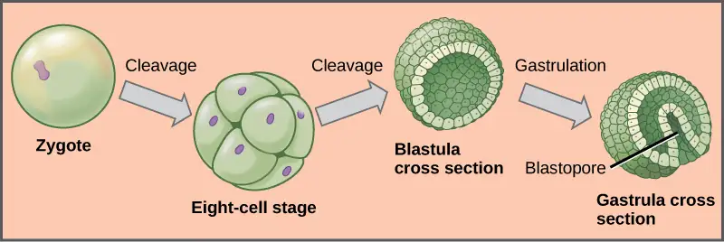
Some animals produce larval forms that are different from the adult. In insects with incomplete metamorphosis, such as grasshoppers, the young resemble wingless adults, but gradually produce larger and larger wing buds during successive molts, until finally producing functional wings and sex organs during the last molt. Other animals, such as some insects and echinoderms, undergo complete metamorphosis in which the embryo develops into one or more feeding larval stages that may differ greatly in structure and function from the adult (Figure 27.4). The adult body then develops from one or more regions of larval tissue. For animals with complete metamorphosis, the larva and the adult may have different diets, limiting competition for food between them. Regardless of whether a species undergoes complete or incomplete metamorphosis, the series of developmental stages of the embryo remains largely the same for most members of the animal kingdom.
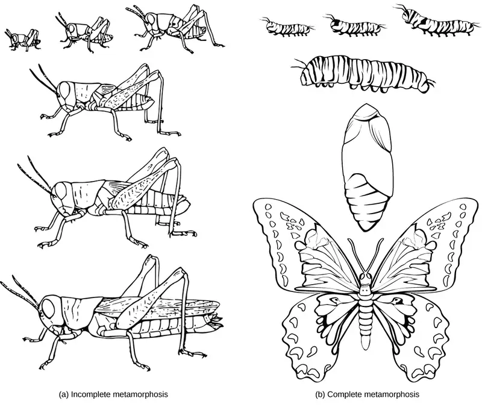
Interactive
Watch the following video to see how human embryonic development (after the blastula and gastrula stages of development) reflects evolution.
The Role of Homeobox (Hox) Genes in Animal Development¶
Since the early nineteenth century, scientists have observed that many animals, from the very simple to the complex, shared similar embryonic morphology and development. Surprisingly, a human embryo and a frog embryo, at a certain stage of embryonic development, look remarkably alike! For a long time, scientists did not understand why so many animal species looked similar during embryonic development but were very different as adults. They wondered what dictated the developmental direction that a fly, mouse, frog, or human embryo would take. Near the end of the twentieth century, a particular class of genes was discovered that had this very job. These genes that determine animal structure are called “homeotic genes,” and they contain DNA sequences called homeoboxes.
The work to understand the role these genes play was novel and incredibly detailed. Over several years, Christiane Nüsslein-Volhard and Eric Wieschaus introduced mutated genes into fruit flies and observed changes to the flies' bodies under microscopes. Eventually they were able to identify specific changes, such as different numbers of body segments, based on mutations of specific genes, therefore showing which genes controlled aspects of development.
Genes with homeoboxes encode protein transcription factors. One group of animal genes containing homeobox sequences is specifically referred to as Hox genes. This cluster of genes is responsible for determining the general body plan, such as the number of body segments of an animal, the number and placement of appendages, and animal head-tail directionality. The first Hox genes to be sequenced were those from the fruit fly (Drosophila melanogaster). A single Hox mutation in the fruit fly can result in an extra pair of wings or even legs growing from the head in place of antennae (this is because antennae and legs are embryologic homologous structures and their appearance as antennae or legs is dictated by their origination within specific body segments of the head and thorax during development). Now, Hox genes are known from virtually all other animals as well.
While there are a great many genes that play roles in the morphological development of an animal, including other homeobox-containing genes, what makes Hox genes so powerful is that they serve as “master control genes” that can turn on or off large numbers of other genes. Hox genes do this by encoding transcription factors that control the expression of numerous other genes. Hox genes are homologous across the animal kingdom, that is, the genetic sequences of Hox genes and their positions on chromosomes are remarkably similar across most animals because of their presence in a common ancestor, from worms to flies, mice, and humans (Figure 27.5). In addition, the order of the genes reflects the anterior-posterior axis of the animal's body. One of the contributions to increased animal body complexity is that Hox genes have undergone at least two and perhaps as many as four duplication events during animal evolution, with the additional genes allowing for more complex body types to evolve. All vertebrates have four (or more) sets of Hox genes, while invertebrates have only one set.
Visual Connection
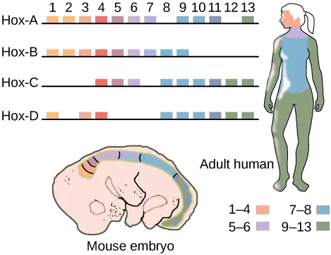
If a Hox 13 gene in a mouse was replaced with a Hox 1 gene, how might this alter animal development?
Two of the five clades within the animal kingdom do not have Hox genes: the Ctenophora and the Porifera. In spite of the superficial similarities between the Cnidaria and the Ctenophora, the Cnidaria have a number of Hox genes, but the Ctenophora have none. The absence of Hox genes from the ctenophores has led to the suggestion that they might be “basal” animals, in spite of their tissue differentiation. Ironically, the Placozoa, which have only a few cell types, do have at least one Hox gene. The presence of a Hox gene in the Placozoa, in addition to similarities in the genomic organization of the Placozoa, Cnidaria and Bilateria, has led to the inclusion of the three groups in a “Parahoxozoa” clade. However, we should note that at this time the reclassification of the Animal Kingdom is still tentative and requires much more study.
27.2 Features Used to Classify Animals¶
Learning Objectives
By the end of this section, you will be able to do the following:
- Explain the differences in animal body plans that support basic animal classification
- Compare and contrast the embryonic development of protostomes and deuterostomes
Scientists have developed a classification scheme that categorizes all members of the animal kingdom, although there are exceptions to most “rules” governing animal classification (Figure 27.6). Animals have been traditionally classified according to two characteristics: body plan and developmental pathway. The major feature of the body plan is its symmetry: how the body parts are distributed along the major body axis. Symmetrical animals can be divided into roughly equivalent halves along at least one axis. Developmental characteristics include the number of germ tissue layers formed during development, the origin of the mouth and anus, the presence or absence of an internal body cavity, and other features of embryological development, such as larval types or whether or not periods of growth are interspersed with molting.
Visual Connection
![The phylogenetic tree of metazoans, or animals, branches into parazoans with no tissues (sponges) together with Ctenophora as sister branches, and Parahoxozoa which branches into Placozoa and Eumetazoans with specialized tissues. Eumetazoans branch into Radiata, diploblastic animals with radial symmetry, and Bilateria, triploblastic animals with bilateral symmetry. Radiata includes cnidarians. Bilateria branches into Acoela, which have no body cavity, and Protostomia and Deuterostomia, which possess a body cavity. Deuterostomes include chordates and echinoderms. Protostomia branches into Lophotrochozoa and Ecdysozoa. Ecdysozoa includes arthropods and nematodes, or roundworms. Lophotrochozoa includes Mollusca, Annelida, Brachopoda, Ectoprocta, Rotifera, and Platyhelminthes.](img/figure-b27-02-01.webp)
Which of the following statements is false?
- Eumetazoans have specialized tissues and parazoans don’t.
- Lophotrochozoa and Ecdysozoa are both Bilataria.
- Acoela and Cnidaria both possess radial symmetry.
- Arthropods are more closely related to nematodes than they are to annelids.
Animal Characterization Based on Body Symmetry¶
At a very basic level of classification, true animals can be largely divided into three groups based on the type of symmetry of their body plan: radially symmetrical, bilaterally symmetrical, and asymmetrical. Asymmetry is seen in two modern clades, the Parazoa (Figure 27.7a) and Placozoa. (Although we should note that the ancestral fossils of the Parazoa apparently exhibited bilateral symmetry.) One clade, the Cnidaria (Figure 27.7b,c), exhibits radial or biradial symmetry: Ctenophores have rotational symmetry (Figure 27.7e). Bilateral symmetry is seen in the largest of the clades, the Bilateria (Figure 27.7d); however the Echinodermata are bilateral as larvae and metamorphose secondarily into radial adults. All types of symmetry are well suited to meet the unique demands of a particular animal’s lifestyle.
Radial symmetry is the arrangement of body parts around a central axis, as is seen in a bicycle wheel or pie. It results in animals having top and bottom surfaces but no left and right sides, nor front or back. If a radially symmetrical animal is divided in any direction along the oral/aboral axis (the side with a mouth is “oral side,” and the side without a mouth is the “aboral side”), the two halves will be mirror images. This form of symmetry marks the body plans of many animals in the phyla Cnidaria, including jellyfish and adult sea anemones (Figure 27.7b, c). Radial symmetry equips these sea creatures (which may be sedentary or only capable of slow movement or floating) to experience the environment equally from all directions. Bilaterally symmetrical animals, like butterflies (Figure 27.7d) have only a single plane along which the body can be divided into equivalent halves. The Ctenophora (Figure 27.7e), although they look similar to jellyfish, are considered to have rotational symmetry rather than radial or biradial symmetry because division of the body into two halves along the oral/aboral axis divides them into two copies of the same half, with one copy rotated 180o, rather than two mirror images.
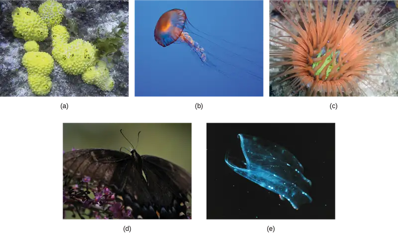
Bilateral symmetry involves the division of the animal through a midsagittal plane, resulting in two superficially mirror images, right and left halves, such as those of a butterfly (Figure 27.7d), crab, or human body. Animals with bilateral symmetry have a “head” and “tail” (anterior vs. posterior), front and back (dorsal vs. ventral), and right and left sides (Figure 27.8). All Eumetazoa except those with secondary radial symmetry are bilaterally symmetrical. The evolution of bilateral symmetry that allowed for the formation of anterior and posterior (head and tail) ends promoted a phenomenon called cephalization, which refers to the collection of an organized nervous system at the animal’s anterior end. In contrast to radial symmetry, which is best suited for stationary or limited-motion lifestyles, bilateral symmetry allows for streamlined and directional motion. In evolutionary terms, this simple form of symmetry promoted active and controlled directional mobility and increased sophistication of resource-seeking and predator-prey relationships.
![The illustration shows a woman's body dissected into planes. The coronal plane separates the front from the back. The front of the body is the ventral side, and the back of the body is the dorsal side. The transverse plane separates the upper body from the lower body, running parallel to the ground. The upper body is defined as cranial, and the lower body is defined as caudal. The sagittal plane dissects the body from side to side. The medial line goes through the center of the body. The areas to the left and right of the medial line are defined as lateral. Parts of the body close to the medial line are proximal, and those further away are distal.](img/figure-27-02-03.webp)
Animals in the phylum Echinodermata (such as sea stars, sand dollars, and sea urchins) display modified radial symmetry as adults, but as we have noted, their larval stages (such as the bipinnaria) initially exhibit bilateral symmetry until they metamorphose in animals with radial symmetry (this is termed secondary radial symmetry). Echinoderms evolved from bilaterally symmetrical animals; thus, they are classified as bilaterally symmetrical.
Interactive
Watch this video to see a quick sketch of the different types of body symmetry. symmetry
Animal Characterization Based on Features of Embryological Development¶
Most animal species undergo a separation of tissues into germ layers during embryonic development. Recall that these germ layers are formed during gastrulation, and that each germ layer typically gives rise to specific types of embryonic tissues and organs. Animals develop either two or three embryonic germ layers (Figure 27.9). The animals that display radial, biradial, or rotational symmetry develop two germ layers, an inner layer (endoderm or mesendoderm) and an outer layer (ectoderm). These animals are called diploblasts, and have a nonliving middle layer between the endoderm and ectoderm (although individual cells may be distributed through this middle layer, there is no coherent third layer of tissue). The four clades considered to be diploblastic have different levels of complexity and different developmental pathways, although there is little information about development in Placozoa. More complex animals (usually those with bilateral symmetry) develop three tissue layers: an inner layer (endoderm), an outer layer (ectoderm), and a middle layer (mesoderm). Animals with three tissue layers are called triploblasts.
Visual Connection
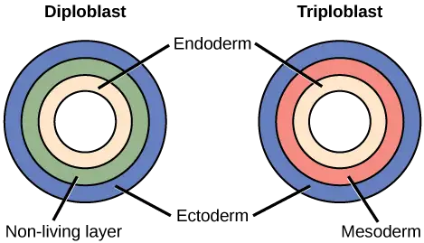
Which of the following statements about diploblasts and triploblasts is false?
- Animals that display only radial symmetry during their lifespans are diploblasts.
- Animals that display bilateral symmetry are triploblasts.
- The endoderm gives rise to the lining of the digestive tract and the respiratory tract.
- The mesoderm gives rise to the central nervous system.
Each of the three germ layers is programmed to give rise to specific body tissues and organs, although there are variations on these themes. Generally speaking, the endoderm gives rise to the lining of the digestive tract (including the stomach, intestines, liver, and pancreas), as well as to the lining of the trachea, bronchi, and lungs of the respiratory tract, along with a few other structures. The ectoderm develops into the outer epithelial covering of the body surface, the central nervous system, and a few other structures. The mesoderm is the third germ layer; it forms between the endoderm and ectoderm in triploblasts. This germ layer gives rise to all specialized muscle tissues (including the cardiac tissues and muscles of the intestines), connective tissues such as the skeleton and blood cells, and most other visceral organs such as the kidneys and the spleen. Diploblastic animals may have cell types that serve multiple functions, such as epitheliomuscular cells, which serve as a covering as well as contractile cells.
Presence or Absence of a Coelom¶
Further subdivision of animals with three germ layers (triploblasts) results in the separation of animals that may develop an internal body cavity derived from mesoderm, called a coelom, and those that do not. This epithelial cell-lined coelomic cavity, usually filled with fluid, lies between the visceral organs and the body wall. It houses many organs such as the digestive, urinary, and reproductive systems, the heart and lungs, and also contains the major arteries and veins of the circulatory system. In mammals, the body cavity is divided into the thoracic cavity, which houses the heart and lungs, and the abdominal cavity, which houses the digestive organs. In the thoracic cavity further subdivision produces the pleural cavity, which provides space for the lungs to expand during breathing, and the pericardial cavity, which provides room for movements of the heart. The evolution of the coelom is associated with many functional advantages. For example, the coelom provides cushioning and shock absorption for the major organ systems that it encloses. In addition, organs housed within the coelom can grow and move freely, which promotes optimal organ development and placement. The coelom also provides space for the diffusion of gases and nutrients, as well as body flexibility, promoting improved animal motility.
Triploblasts that do not develop a coelom are called acoelomates, and their mesoderm region is completely filled with tissue, although they do still have a gut cavity. Examples of acoelomates include animals in the phylum Platyhelminthes, also known as flatworms. Animals with a true coelom are called eucoelomates (or coelomates) (Figure 27.10). In such cases, a true coelom arises entirely within the mesoderm germ layer and is lined by an epithelial membrane. This membrane also lines the organs within the coelom, connecting and holding them in position while allowing them some freedom of movement. Annelids, mollusks, arthropods, echinoderms, and chordates are all eucoelomates. A third group of triploblasts has a slightly different coelom lined partly by mesoderm and partly by endoderm. Although still functionally a coelom, these are considered “false” coeloms, and so we call these animals pseudocoelomates. The phylum Nematoda (roundworms) is an example of a pseudocoelomate. True coelomates can be further characterized based on other features of their early embryological development.
![Part a shows the body plan of acoelomates, including flatworms. Acoelomates have a central digestive cavity. Outside this digestive cavity are three tissue layers: an inner endoderm, a central mesoderm, and an outer ectoderm. The photo shows a swimming flatworm, which has the appearance of a frilly black and pink ribbon. Part b shows the body plan of eucoelomates, which include annelids, mollusks, arthropods, echinoderms, and chordates. Eucoelomates have the same tissue layers as acoelomates, but a cavity called a coelom exists within the mesoderm. The coelom is divided into two symmetrical parts that are separated by two spokes of mesoderm. The photo shows a swimming annelid known as a bloodworm. The bloodworm has a tubular body that tapers at each end. Numerous appendages radiate from either side. Part c shows the body plan of pseudocoelomates, which include roundworms. Like the acoelomates and eucoelomates, the pseudocoelomates have an endoderm, a mesoderm, and an ectoderm. However, in pseudocoelomates, a pseudocoelum separates the endoderm from the mesoderm. The photo shows a roundworm, or nematode, which has a tubular body.](img/figure-27-02-05.webp)
Embryonic Development of the Mouth¶
Bilaterally symmetrical, tribloblastic eucoelomates can be further divided into two groups based on differences in the origin of the mouth. When the primitive gut forms, the opening that first connects the gut cavity to the outside of the embryo is called the blastopore. Most animals have openings at both ends of the gut: mouth at one end and anus at the other. One of these openings will develop at or near the site of the blastopore. In Protostomes ("mouth first"), the mouth develops at the blastopore (Figure 27.11). In Deuterostomes ("mouth second"), the mouth develops at the other end of the gut (Figure 27.11) and the anus develops at the site of the blastopore. Protostomes include arthropods, mollusks, and annelids. Deuterostomes include more complex animals such as chordates but also some “simple” animals such as echinoderms. Recent evidence has challenged this simple view of the relationship between the location of the blastopore and the formation of the mouth, however, and the theory remains under debate. Nevertheless, these details of mouth and anus formation reflect general differences in the organization of protostome and deuterostome embryos, which are also expressed in other developmental features.
One of these differences between protostomes and deuterostomes is the method of coelom formation, beginning from the gastrula stage. Since body cavity formation tends to accompany the formation of the mesoderm, the mesoderm of protostomes and deuterostomes forms differently. The coelom of most protostomes is formed through a process called schizocoely. The mesoderm in these organisms is usually the product of specific blastomeres, which migrate into the interior of the embryo and form two clumps of mesodermal tissue. Within each clump, cavities develop and merge to form the hollow opening of the coelom. Deuterostomes differ in that their coelom forms through a process called enterocoely. Here, the mesoderm develops as pouches that are pinched off from the endoderm tissue. These pouches eventually fuse and expand to fill the space between the gut and the body wall, giving rise to the coelom.
Another difference in organization of protostome and deuterostome embryos is expressed during cleavage. Protostomes undergo spiral cleavage, meaning that the cells of one pole of the embryo are rotated, and thus misaligned, with respect to the cells of the opposite pole. This is due to the oblique angle of cleavage relative to the two poles of the embryo. Deuterostomes undergo radial cleavage, where the cleavage axes are either parallel or perpendicular to the polar axis, resulting in the parallel (up-and-down) alignment of the cells between the two poles.
![The illustration compares the development of protostomes and deuterostomes. In both protostomes and deuterostomes, the gastrula, which resembles a hollow ball of cells, contains an indentation called a blastopore. In protostomes, two circular layers of mesoderm form inside the gastrula, containing the coelom cavity. As the protostome develops, the mesoderm grows and fuses with the gastrula cell layer. The blastopore becomes the mouth, and a second opening forms opposite the mouth, which becomes the anus. In deuterostomes, two groups of gastrula cells in the blastopore grow inward to form the mesoderm. As the deuterostome develops, the mesoderm pinches off and fuses, forming a second body cavity. The body plan of the deuterostome at this stage looks very similar to that of the protostome, but the blastopore becomes the anus, and the second opening becomes the mouth.](img/figure-27-02-06.webp)
A second distinction between the types of cleavage in protostomes and deuterostomes relates to the fate of the resultant blastomeres (cells produced by cleavage). In addition to spiral cleavage, protostomes also undergo determinate cleavage. This means that even at this early stage, the developmental fate of each embryonic cell is already determined. A given cell does not have the ability to develop into any cell type other than its original destination. Removal of a blastomere from an embryo with determinate cleavage can result in missing structures, and embryos that fail to develop. In contrast, deuterostomes undergo indeterminate cleavage, in which cells are not yet fully committed at this early stage to develop into specific cell types. Removal of individual blastomeres from these embryos does not result in the loss of embryonic structures. In fact, twins (clones) can be produced as a result from blastomeres that have been separated from the original mass of blastomere cells. Unlike protostomes, however, if some blastomeres are damaged during embryogenesis, adjacent cells are able to compensate for the missing cells, and the embryo is not damaged. These cells are referred to as undetermined cells. This characteristic of deuterostomes is reflected in the existence of familiar embryonic stem cells, which have the ability to develop into any cell type until their fate is programmed at a later developmental stage.
Evolution Connection: The Evolution of the Coelom
One of the first steps in the classification of animals is to examine the animal’s body. One structure that is used in classification of animals is the body cavity or coelom. The body cavity develops within the mesoderm, so only triploblastic animals can have body cavities. Therefore body cavities are found only within the Bilateria. In other animal clades, the gut is either close to the body wall or separated from it by a jelly-like material. The body cavity is important for two reasons. Fluid within the body cavity protects the organs from shock and compression. In addition, since in triploblastic embryos, most muscle, connective tissue, and blood vessels develop from mesoderm, these tissues developing within the lining of the body cavity can reinforce the gut and body wall, aid in motility, and efficiently circulate nutrients.
To recap what we have discussed above, animals that do not have a coelom are called acoelomates. The major acoelomate group in the Bilateria is the flatworms, including both free-living and parasitic forms such as tapeworms. In these animals, mesenchyme fills the space between the gut and the body wall. Although two layers of muscle are found just under the epidermis, there is no muscle or other mesodermal tissue around the gut. Flatworms rely on passive diffusion for nutrient transport across their body.
In pseudocoelomates, there is a body cavity between the gut and the body wall, but only the body wall has mesodermal tissue. In these animals, the mesoderm forms, but does not develop cavities within it. Major pseudocoelomate phyla are the rotifers and nematodes. Animals that have a true coelom are called eucoelomates; all vertebrates, as well as mollusks, annelids, arthropods, and echinoderms, are eucoelomates. The coelom develops within the mesoderm during embryogenesis. Of the major bilaterian phyla, the mollusks, annelids, and arthropods are schizocoels, in which the mesoderm splits to form the body cavity, while the echinoderms and chordates are enterocoels, in which the mesoderm forms as two or more buds off of the gut. These buds separate from the gut and coalesce to form the body cavity. In the vertebrates, mammals have a subdivided body cavity, with the thoracic cavity separated from the abdominal cavity. The pseudocoelomates may have had eucoelomate ancestors and may have lost their ability to form a complete coelom through genetic mutations. Thus, this step in early embryogenesis—the formation of the coelom—has had a large evolutionary impact on the various species of the animal kingdom.
27.3 Animal Phylogeny¶
Learning Objectives
By the end of this section, you will be able to do the following:
- Interpret the metazoan phylogenetic tree
- Describe the types of data that scientists use to construct and revise animal phylogeny
- List some of the relationships within the modern phylogenetic tree that have been discovered as a result of modern molecular data
Biologists strive to understand the evolutionary history and relationships of members of the animal kingdom, and all of life, for that matter. The study of phylogeny (the branching sequence of evolution) aims to determine the evolutionary relationships between phyla. Currently, most biologists divide the animal kingdom into 35 to 40 phyla. Scientists develop phylogenetic trees, which serve as hypotheses about which species have evolved from which ancestors.
Recall that until recently, only morphological characteristics and the fossil record were used to determine phylogenetic relationships among animals. Scientific understanding of the distinctions and hierarchies between anatomical characteristics provided much of this knowledge. Used alone, however, this information can be misleading. Morphological characteristics (such as skin color, body shape, etc.) may evolve multiple times, and independently, through evolutionary history. Analogous characteristics may appear similar between animals, but their underlying evolution may be very different. With the advancement of molecular technologies, modern phylogenetics is now informed by genetic and molecular analyses, in addition to traditional morphological and fossil data. With a growing understanding of genetics, the animal evolutionary tree has changed substantially and continues to change as new DNA and RNA analyses are performed on additional animal species.
Constructing an Animal Phylogenetic Tree¶
The current understanding of evolutionary relationships among animal, or Metazoa, phyla begins with the distinction between animals with true differentiated tissues, called Eumetazoa, and animal phyla that do not have true differentiated tissues, such as the sponges (Porifera) and the Placozoa (Figure 27.6). Similarities between the feeding cells of sponges (choanocytes) and choanoflagellate protists (Figure 27.12) have been used to suggest that Metazoa evolved from a common ancestral organism that resembled the modern colonial choanoflagellates.
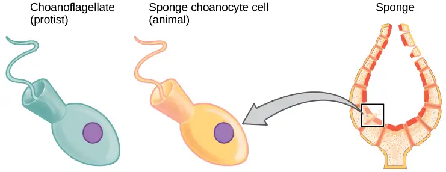
Eumetazoa are subdivided into radially symmetrical animals and bilaterally symmetrical animals, and are thus classified into the clades Bilateria and Radiata, respectively. As mentioned earlier, the cnidarians and ctenophores are animal phyla with true radial, biradial, or rotational symmetry. All other Eumetazoa are members of the Bilateria clade. The bilaterally symmetrical animals are further divided into deuterostomes (including chordates and echinoderms) and two distinct clades of protostomes (including ecdysozoans and lophotrochozoans) (Figure 27.13a,b). Ecdysozoa includes nematodes and arthropods; they are so named for a commonly found characteristic among the group: the physiological process of exoskeletal molting followed by the “stripping” of the outer cuticular layer, called ecdysis. Lophotrochozoa is named for two structural features, each common to certain phyla within the clade. Some lophotrochozoan phyla are characterized by a larval stage called trochophore larvae, and other phyla are characterized by the presence of a feeding structure called a lophophore (thus, the shorter term, “lopho-trocho-zoa”).
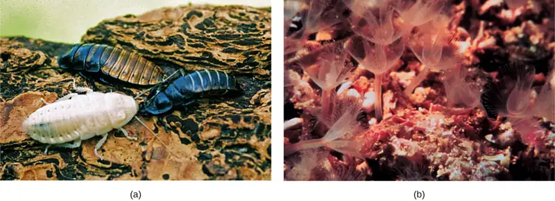
Interactive
Explore an interactive tree of life here. Zoom in and out and click to learn more about the organisms and their evolutionary relationships.
Modern Advances in Phylogenetic Understanding Come from Molecular Analyses¶
The phylogenetic groupings are continually being debated and refined by evolutionary biologists. Each year, new evidence emerges that further alters the relationships described by a phylogenetic tree diagram.
Interactive
Watch the following video to learn how biologists use genetic data to determine relationships among organisms.
Nucleic acid and protein analyses have greatly modified and refined the modern phylogenetic animal tree. These data come from a variety of molecular sources, such as mitochondrial DNA, nuclear DNA, ribosomal RNA (rRNA), and certain cellular proteins. Many evolutionary relationships in the modern tree have only recently been determined from the molecular evidence. For example, a previously classified group of animals called lophophorates, which included brachiopods and bryozoans, were long-thought to be primitive deuterostomes. Extensive molecular analysis using rRNA data found these animals are actually protostomes, more closely related to annelids and mollusks. This discovery allowed for the distinction of the protostome clade Lophotrochozoa. Molecular data have also shed light on some differences within the lophotrochozoan group, and the placement of the Platyhelminthes is particularly problematic. Some scientists believe that the phyla Platyhelminthes and Rotifera should actually belong to their own clade of protostomes termed Platyzoa.
Molecular research similar to the discoveries that brought about the distinction of the lophotrochozoan clade has also revealed a dramatic rearrangement of the relationships between mollusks, annelids, arthropods, and nematodes, and as a result, a new ecdysozoan clade was formed. Due to morphological similarities in their segmented body types, annelids and arthropods were once thought to be closely related. However, molecular evidence has revealed that arthropods are actually more closely related to nematodes, now comprising the ecdysozoan clade, and annelids are more closely related to mollusks, brachiopods, and other phyla in the lophotrochozoan clade. These two clades now make up the protostomes.
Another change to former phylogenetic groupings because of modern molecular analyses includes the emergence of an entirely new phylum of worm called Acoelomorpha. These acoel flatworms were long thought to belong to the phylum Platyhelminthes because of their similar “flatworm” morphology. However, molecular analyses revealed this to be a false relationship and originally suggested that acoels represented living species of some of the earliest divergent bilaterians. More recent research into the acoelomorphs has called this hypothesis into question and suggested that the acoels are more closely related to deuterostomes. The placement of this new phylum remains disputed, but scientists agree that with sufficient molecular data, their true phylogeny will be determined.
Another example of phylogenetic reorganization involves the identification of the Ctenophora as the basal clade of the animal kingdom. Ctenophora, or comb jellies, were once considered to be a sister group of the Cnidaria, and the sponges (Porifera) were placed as the basal animal group, sister to other animals. The presence of nerve and muscle cells in both the Ctenophores and the Cnidaria and their absence in the Porifera strengthened this view of the relationships among simple animal forms. However, recent molecular analysis has shown that many of the genes that support neural development in other animals are absent from the Ctenophore genome. The muscle cells are restricted to the mouth and tentacles and are derived from cells in the mesoglea. The mitochondrial genome of the Ctenophores is small and lacks many genes found in other animal mitochondrial genomes. These features plus the absence of Hox genes from the Ctenophores have been used to argue that the Ctenophores should be considered basal or as a sister group of the Porifera, and that the evolution of specialized nerve and muscle tissue may have occurred more than once in the history of animal life. Although Ctenophores have been shown as basal to other animals in the phylogeny presented in Chapter 27.2, debate on this issue is likely to continue as Ctenophores are more closely studied.
Changes to the phylogenetic tree can be difficult to track and understand, and are evidence of the process of science. Data and analytical methods play a significant role in the development of phylogenies. For this reason – because molecular analysis and reanalysis are not complete -- we cannot necessarily dismiss a former phylogenetic tree as inaccurate. A recent reanalysis of molecular evidence by an international group of evolutionary biologists refuted the proposition that comb jellies are the phylogenetically oldest extant metazoan group. The study, which relied on more sophisticated methods of analyzing the original genetic data, reaffirms the traditional view that the sponges were indeed the first phylum to diverge from the common ancestor of metazoans. The ongoing discussion concerning the location of sponges and comb jellies on the animal “family tree” is an example of what drives science forward.
27.4 The Evolutionary History of the Animal Kingdom¶
Learning Objectives
By the end of this section, you will be able to do the following:
- Describe the features that characterized the earliest animals and approximately when they appeared on earth
- Explain the significance of the Cambrian period for animal evolution and the changes in animal diversity that took place during that time
- Describe some of the unresolved questions surrounding the Cambrian explosion
- Discuss the implications of mass animal extinctions that have occurred in evolutionary history
Many questions regarding the origins and evolutionary history of the animal kingdom continue to be researched and debated, as new fossil and molecular evidence change prevailing theories. Some of these questions include the following: How long have animals existed on Earth? What were the earliest members of the animal kingdom, and what organism was their common ancestor? While animal diversity increased during the Cambrian period of the Paleozoic era, 530 million years ago, modern fossil evidence suggests that primitive animal species existed much earlier.
Pre-Cambrian Animal Life¶
The time before the Cambrian period is known as the Ediacaran Period (from about 635 million years ago to 543 million years ago), the final period of the late Proterozoic Neoproterozoic Era (Figure 27.14). Ediacaran fossils were first found in the Ediacaran hills of Southern Australia. There are no living representatives of these species, which have left impressions that look like those of feathers or coins (Figure 27.15). It is believed that early animal life, termed Ediacaran biota, evolved from protists at this time.
![Table A describes eras in earth's history associated with evolution of plant groups. In the first column earth's history is divided into four eons, the Pre Archean- Hadean, Archaean, Proterozoic, Phanerozoic. The oldest eon, the Pre Archean, spans the beginning of earth's history to about 3.8 billion years ago. The Archean eon spans 2.5 to 3.8 billion years ago, and the Proterozoic spans 540 million to 2.5 billion years ago. The second column lists the eras within each eon. The Phanerozoic eon, from 540 million years ago to present time, is sub divided into the Paleozoic, Mesozoic and Cenozoic eras. The third column lists the periods within each. The Paleozoic era, from 250 to 540 million years ago, is further divided into seven periods: the Cambrian from 500 to 540 million years ago, the Ordovician from 435 to 500 million years ago, the Silurian from 410 to 435 million years ago, the Devonian from 319 to 410 million years ago, the Carboniferous from 290 to 290 million years ago, and the Permian from 250 to 290 million years ago. The Mesozoic era, from 66 to 250 million years ago, is divided into three periods, the Triassic from 205 to 250 million years ago, the Jurassic from 138 to 205 million years ago, and the Cretaceous, from 66 to 138 million years ago. The Cenozoic era, from 66 million years ago to modern times, is divided into three eras, the Paleogene from 23 to 66 million years ago, Neogene from 2.6 to 23 million years ago, and the Quaternary from present to 2.8 million years. The last column indicates the time periods in millions of years. Illustration B shows geological periods in a spiral starting with the beginning of earth's history at the bottom and ending with modern times at the top. The diversity and complexity of life increases toward the top of the spiral.](img/figure-b27-04-01ab.webp)
Most Ediacaran biota were just a few mm or cm long, but some of the feather-like forms could reach lengths of over a meter. Recently there has been increasing scientific evidence suggesting that more varied and complex animal species lived during this time, and likely even before the Ediacaran period.
Fossils believed to represent the oldest animals with hard body parts were recently discovered in South Australia. These sponge-like fossils, named Coronacollina acula, date back as far as 560 million years, and are believed to show the existence of hard body parts and spicules that extended 20–40 cm from the thimble-shaped body (estimated about 5 cm long). Other fossils from the Ediacaran period are shown in Figure 27.15a, b, c.
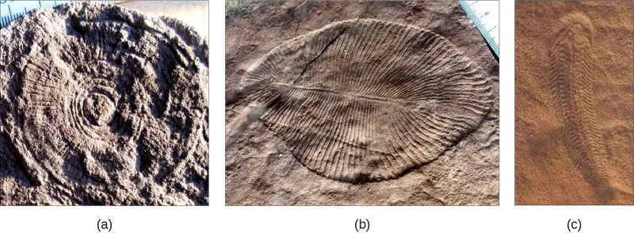
Another recent fossil discovery may represent the earliest animal species ever found. While the validity of this claim is still under investigation, these primitive fossils appear to be small, one-centimeter long, sponge-like creatures, irregularly shaped and with internal tubes or canals. These ancient fossils from South Australia date back 650 million years, actually placing the putative animal before the great ice age that marked the transition between the Cryogenian period and the Ediacaran period. Until this discovery, most scientists believed that there was no animal life prior to the Ediacaran period. Many scientists now believe that animals may in fact have evolved during the Cryogenian period.
The Cambrian Explosion of Animal Life¶
If the fossils of the Ediacaran and Cryogenian periods are enigmatic, those of the following Cambrian period are far less so, and include body forms similar to those living today. The Cambrian period, occurring between approximately 542–488 million years ago, marks the most rapid evolution of new animal phyla and animal diversity in Earth’s history. The rapid diversification of animals that appeared during this period, including most of the animal phyla in existence today, is often referred to as the Cambrian explosion (Figure 27.16). Animals resembling echinoderms, mollusks, worms, arthropods, and chordates arose during this period. What may have been a top predator of this period was an arthropod-like creature named Anomalocaris, over a meter long, with compound eyes and spiky tentacles. Obviously, all these Cambrian animals already exhibited complex structures, so their ancestors must have existed much earlier.
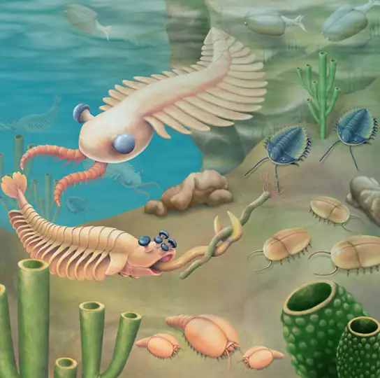
One of the most dominant species during the Cambrian period was the trilobite, an arthropod that was among the first animals to exhibit a sense of vision (Figure 27.17a,b,c,d). Trilobites were somewhat similar to modern horseshoe crabs. Thousands of different species have been identified in fossil sediments of the Cambrian period; not a single species survives today.
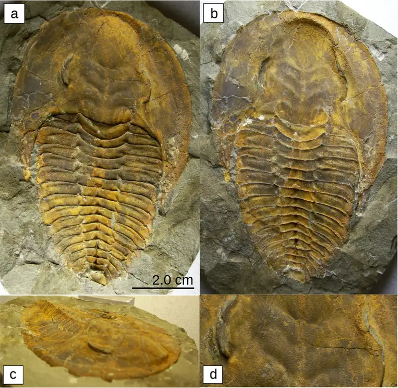
The cause of the Cambrian explosion is still debated, and in fact, it may be that a number of interacting causes ushered in this incredible explosion of animal diversity. For this reason, there are a number of hypotheses that attempt to answer this question. Environmental changes may have created a more suitable environment for animal life. Examples of these changes include rising atmospheric oxygen levels (Figure 27.18) and large increases in oceanic calcium concentrations that preceded the Cambrian period. Some scientists believe that an expansive, continental shelf with numerous shallow lagoons or pools provided the necessary living space for larger numbers of different types of animals to coexist. There is also support for hypotheses that argue that ecological relationships between species, such as changes in the food web, competition for food and space, and predator-prey relationships, were primed to promote a sudden massive coevolution of species. Yet other hypotheses claim genetic and developmental reasons for the Cambrian explosion. The morphological flexibility and complexity of animal development afforded by the evolution of Hox control genes may have provided the necessary opportunities for increases in possible animal morphologies at the time of the Cambrian period. Hypotheses that attempt to explain why the Cambrian explosion happened must be able to provide valid reasons for the massive animal diversification, as well as explain why it happened when it did. There is evidence that both supports and refutes each of the hypotheses described above, and the answer may very well be a combination of these and other theories.
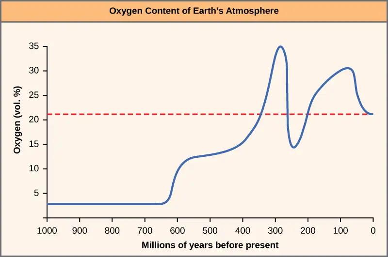
However, unresolved questions about the animal diversification that took place during the Cambrian period remain. For example, we do not understand how the evolution of so many species occurred in such a short period of time. Was there really an “explosion” of life at this particular time? Some scientists question the validity of this idea, because there is increasing evidence to suggest that more animal life existed prior to the Cambrian period and that other similar species’ so-called explosions (or radiations) occurred later in history as well. Furthermore, the vast diversification of animal species that appears to have begun during the Cambrian period continued well into the following Ordovician period. Despite some of these arguments, most scientists agree that the Cambrian period marked a time of impressively rapid animal evolution and diversification of body forms that is unmatched for any other time period.
Interactive
View an animation of what ocean life may have been like during the Cambrian explosion. ocean_life
Post-Cambrian Evolution and Mass Extinctions¶
The periods that followed the Cambrian during the Paleozoic Era are marked by further animal evolution and the emergence of many new orders, families, and species. As animal phyla continued to diversify, new species adapted to new ecological niches. During the Ordovician period, which followed the Cambrian period, plant life first appeared on land. This change allowed formerly aquatic animal species to invade land, feeding directly on plants or decaying vegetation. Continual changes in temperature and moisture throughout the remainder of the Paleozoic Era due to continental plate movements encouraged the development of new adaptations to terrestrial existence in animals, such as limbed appendages in amphibians and epidermal scales in reptiles.
Changes in the environment often create new niches (diversified living spaces) that invite rapid speciation and increased diversity. On the other hand, cataclysmic events, such as volcanic eruptions and meteor strikes that obliterate life, can result in devastating losses of diversity to some clades, yet provide new opportunities for others to “fill in the gaps” and speciate. Such periods of mass extinction (Figure 27.19) have occurred repeatedly in the evolutionary record of life, erasing some genetic lines while creating room for others to evolve into the empty niches left behind. The end of the Permian period (and the Paleozoic Era) was marked by the largest mass extinction event in Earth’s history, a loss of an estimated 95 percent of the extant species at that time. Some of the dominant phyla in the world’s oceans, such as the trilobites, disappeared completely. On land, the disappearance of some dominant species of Permian reptiles made it possible for a new line of reptiles to emerge, the dinosaurs. The warm and stable climatic conditions of the ensuing Mesozoic Era promoted an explosive diversification of dinosaurs into every conceivable niche in land, air, and water. Plants, too, radiated into new landscapes and empty niches, creating complex communities of producers and consumers, some of which became very large on the abundant food available.
Another mass extinction event occurred at the end of the Cretaceous period, bringing the Mesozoic Era to an end. Skies darkened and temperatures fell after a large meteor impact and tons of volcanic ash ejected into the atmosphere blocked incoming sunlight. Plants died, herbivores and carnivores starved, and the dinosaurs ceded their dominance of the landscape to the more warm-blooded mammals. In the following Cenozoic Era, mammals radiated into terrestrial and aquatic niches once occupied by dinosaurs, and birds—the warm-blooded direct descendants of one line of the ruling reptiles—became aerial specialists. The appearance and dominance of flowering plants in the Cretaceous Era created new niches for pollinating insects, as well as for birds and mammals. Changes in animal species diversity during the late Cretaceous and early Cenozoic were also promoted by a dramatic shift in Earth’s geography, as tectonic plates slid over the crust into their current positions, leaving some animal groups isolated on islands and continents, or separated by mountain ranges or inland seas from other competitors. Early in the Cenozoic, new ecosystems appeared, with the evolution of grasses and coral reefs, leading to their wide distribution. Late in the Cenozoic, further extinctions followed by speciation occurred during ice ages that covered high latitudes with ice and then retreated, leaving new open spaces for colonization.
Interactive
Watch the following video to learn more about the mass extinctions.
![The chart shows percent extinction intensity of eliminated marine genera versus time in millions of years before present. Extinction intensity spikes at boundaries between periods, including the end of the Ordovician which had 30 percent extinction occurrences of marine genera approximately 450 million years ago. The late Devonian had approximately 25 percent extinction occurrences of marine genera at roughly 375 million years ago. The end of the Permian had 50 percent extinction occurrences of marine genera approximately 250 million years ago. The end of the Triassic had roughly 30 percent extinction occurrences of marine genera 200 million years ago. And the end of the Cretaceous periods had over 30 percent extinction occurrences of marine genera roughly 70 million years ago.](img/figure-b27-04-06-extinctions.webp)
Career Connection: Paleontologist
Natural history museums contain the fossils of extinct animals as well as information about how these animals evolved, lived, and died. Paleontologists are scientists who study prehistoric life. They use fossils to observe and explain how life evolved on Earth and how species interacted with each other and with the environment. The first paleontologists were scientists from other disciplines, such as geology, who evaluated the fossils they found to determine the concepts of extended ages of the Earth, prehistoric life, and extinction. They were aided in their work by surprise discoveries by laypeople, and other more concentrated efforts by self-taught scientists. Mary Anning, for example, was a well-known fossil hunter who discovered, cataloged, and diagrammed the fossils of significant dinosaurs such as the Plesiosaurus. Scientists from throughout Europe consulted with her to deepen their own understanding and draw conclusions that laid the foundation for the discipline.
Paleontology today relies on far more varied knowledge and technology than it did in Anning's day. A paleontologist needs to be knowledgeable in mathematics, biology, ecology, chemistry, geology, and many other scientific disciplines. A paleontologist’s work may involve field studies: searching for and studying fossils. In addition to digging for and finding fossils, paleontologists also prepare fossils for further study and analysis. Although dinosaurs are probably the first animals that come to mind when thinking about ancient life, paleontologists study a variety of life forms, from plants, fungi and invertebrates to the vertebrate fishes, amphibians, reptiles, birds and mammals. Biophysics, biochemistry, geographic information systems, and data science are all additional fields of knowledge that paleontologists use to uncover the truth of the past.
An undergraduate degree in earth science or biology is a good place to start toward the career path of becoming a paleontologist. Most often, a graduate degree is necessary. Additionally, work experience in a museum or in a paleontology lab is useful.
Chapter Review¶
Key Terms¶
- acoelomate
- animal without a body cavity
- bilateral symmetry
- type of symmetry in which there is only one plane of symmetry, so the left and right halves of an animal are mirror images
- blastopore
- opening into the archenteron that forms during gastrulation
- blastula
- 16–32 cell stage of development of an animal embryo
- body plan
- morphology or defining shape of an organism
- Cambrian explosion
- time during the Cambrian period (542–488 million years ago) when most of the animal phyla in existence today evolved
- cleavage
- cell divisions subdividing a fertilized egg (zygote) to form a multicellular embryo
- coelom
- lined body cavity
- Cryogenian period
- geologic period (850–630 million years ago) characterized by a very cold global climate
- determinate cleavage
- cleavage pattern in which developmental fate of each blastomere is tightly defined
- deuterostome
- blastopore develops into the anus, with the second opening developing into the mouth
- diploblast
- animal that develops from two germ layers
- Ecdysozoa
- clade of protostomes that exhibit exoskeletal molting (ecdysis)
- Ediacaran period
- geological period (630–542 million years ago) when the oldest definite multicellular organisms with tissues evolved
- enterocoely
- mesoderm of deuterostomes develops as pouches that are pinched off from endodermal tissue, cavity contained within the pouches becomes coelom
- eucoelomate
- animal with a body cavity completely lined with mesodermal tissue
- Eumetazoa
- group of animals with true differentiated tissues
- gastrula
- stage of animal development characterized by the formation of the digestive cavity
- germ layer
- collection of cells formed during embryogenesis that will give rise to future body tissues, more pronounced in vertebrate embryogenesis
- Hox gene
- (also, homeobox gene) master control gene that can turn on or off large numbers of other genes during embryogenesis
- indeterminate cleavage
- cleavage pattern in which individual blastomeres have the character of "stem cells," and are not yet predetermined to develop into specific cell types
- Lophotrochozoa
- clade of protostomes that exhibit a trochophore larvae stage or a lophophore feeding structure
- mass extinction
- event or environmental condition that wipes out the majority of species within a relatively short geological time period
- Metazoa
- group containing all animals
- organogenesis
- formation of organs in animal embryogenesis
- Parazoa
- group of animals without true differentiated tissues
- protostome
- blastopore develops into the mouth of protostomes, with the second opening developing into the anus
- pseudocoelomate
- animal with a body cavity located between the mesoderm and endoderm
- radial cleavage
- cleavage axes are parallel or perpendicular to the polar axis, resulting in the alignment of cells between the two poles
- radial symmetry
- type of symmetry with multiple planes of symmetry, with body parts (rays) arranged around a central disk
- schizocoely
- during development of protostomes, a solid mass of mesoderm splits apart and forms the hollow opening of the coelom
- spiral cleavage
- cells of one pole of the embryo are rotated or misaligned with respect to the cells of the opposite pole
- triploblast
- animal that develops from three germ layers
Summary¶
27.1 Features of the Animal Kingdom¶
Animals constitute an incredibly diverse kingdom of organisms. Although animals range in complexity from simple sea sponges to human beings, most members of the animal kingdom share certain features. Animals are eukaryotic, multicellular, heterotrophic organisms that ingest their food and usually develop into motile creatures with a fixed body plan. A major characteristic unique to the animal kingdom is the presence of differentiated tissues, such as nerve, muscle, and connective tissues, which are specialized to perform specific functions. Most animals undergo sexual reproduction, leading to a series of developmental embryonic stages that are relatively similar across the animal kingdom. A class of transcriptional control genes called Hox genes directs the organization of the major animal body plans, and these genes are strongly homologous across the animal kingdom.
27.2 Features Used to Classify Animals¶
Organisms in the animal kingdom are classified based on their body morphology, their developmental pathways, and their genetic affinities. The relationships between the Eumetazoa and more basal clades (Ctenophora, Porifera, and Placozoa) are still being debated. The Eumetazoa ("true animals") are divided into those with radial versus bilateral symmetry. Generally, the simpler and often nonmotile animals display radial symmetry, which allows them to explore their environment in all directions. Animals with radial symmetry are also generally characterized by the development of two embryological germ layers, the endoderm and ectoderm, whereas animals with bilateral symmetry are generally characterized by the development of a third embryologic germ layer, the mesoderm. Animals with three germ layers, called triploblasts, are further characterized by the presence or absence of an internal body cavity called a coelom. The presence of a coelom affords many advantages, and animals with a coelom may be termed true coelomates or pseudocoelomates, depending the extent to which mesoderm lines the body cavity. Coelomates are further divided into one of two groups called protostomes and deuterostomes, based on a number of developmental characteristics, including differences in zygote cleavage, the method of coelom formation, and the rigidity of the developmental fate of blastomeres.
27.3 Animal Phylogeny¶
Scientists are interested in the evolutionary history of animals and the evolutionary relationships among them. There are three main sources of data that scientists use to create phylogenetic evolutionary tree diagrams that illustrate such relationships: morphological information (which includes developmental morphologies), fossil record data, and, most recently, molecular data. The details of the modern phylogenetic tree change frequently as new data are gathered, and molecular data has recently contributed to many substantial modifications of the understanding of relationships between animal phyla.
27.4 The Evolutionary History of the Animal Kingdom¶
The most rapid documented diversification and evolution of animal species in all of history occurred during the Cambrian period of the Paleozoic Era, a phenomenon known as the Cambrian explosion. Until recently, scientists believed that there were only very few tiny and simplistic animal species in existence before this period. However, recent fossil discoveries have revealed that additional, larger, and more complex animals existed during the Ediacaran period, and even possibly earlier, during the Cryogenian period. Still, the Cambrian period undoubtedly witnessed the emergence of the majority of animal phyla that we know today, although many questions remain unresolved about this historical phenomenon.
The remainder of the Paleozoic Era is marked by the growing appearance of new classes, families, and species, and the early colonization of land by certain marine animals and semiaquatic arthropods, both freshwater and marine. The evolutionary history of animals is also marked by numerous major extinction events, each of which wiped out a majority of extant species. Some species of most animal phyla survived these extinctions, allowing the phyla to persist and continue to evolve into species that we see today.
Visual Connection Questions¶
27.1 Features of the Animal Kingdom¶
1. Figure 27.5 If a Hox 13 gene in a mouse was replaced with a Hox 1 gene, how might this alter animal development?
Answer
Figure 27.5 The animal might develop two heads and no tail.
27.2 Features Used to Classify Animals¶
2. Figure 27.6 Which of the following statements is false?
- Eumetazoans have specialized tissues and parazoans don’t.
- Lophotrochozoa and Ecdysozoa are both Bilataria.
- Acoela and Cnidaria both possess radial symmetry.
- Arthropods are more closely related to nematodes than they are to annelids.
Answer
3. Figure 27.9 Which of the following statements about diploblasts and triploblasts is false?
- Animals that display radial symmetry are diploblasts.
- Animals that display bilateral symmetry are triploblasts.
- The endoderm gives rise to the lining of the digestive tract and the respiratory tract.
- The mesoderm gives rise to the central nervous system.
Answer
Review Questions¶
27.1 Features of the Animal Kingdom¶
4. Which of the following is not a feature common to most animals?
- development into a fixed body plan
- asexual reproduction
- specialized tissues
- heterotrophic nutrient sourcing
Answer
B
5. During embryonic development, unique cell layers develop into specific groups of tissues or organs during a stage called ________.
- the blastula stage
- the germ layer stage
- the gastrula stage
- the organogenesis stage
Answer
C
6. Which of the following phenotypes would most likely be the result of a Hox gene mutation?
- abnormal body length or height
- two different eye colors
- the contraction of a genetic illness
- two fewer appendages than normal
Answer
D
27.2 Features Used to Classify Animals¶
7. Which of the following organisms is most likely to be a diploblast?
- sea star
- shrimp
- jellyfish
- insect
Answer
C
8. Which of the following is not possible?
- radially symmetrical diploblast
- diploblastic eucoelomate
- protostomic coelomate
- bilaterally symmetrical deuterostome
Answer
B
9. An animal whose development is marked by radial cleavage and enterocoely is ________.
- a deuterostome
- an annelid or mollusk
- either an acoelomate or eucoelomate
- none of the above
Answer
A
27.3 Animal Phylogeny¶
10. Consulting the modern phylogenetic tree of animals, which of the following would not constitute a clade?
- deuterostomes
- lophotrochozoans
- Parazoa
- Bilateria
Answer
C
11. Which of the following is thought to be the most closely related to the common animal ancestor?
- fungal cells
- protist cells
- plant cells
- bacterial cells
Answer
B
12. As with the emergence of the Acoelomorpha phylum, it is common for ____ data to misplace animals in close relation to other species, whereas ____ data often reveals a different and more accurate evolutionary relationship.
- molecular : morphological
- molecular : fossil record
- fossil record : morphological
- morphological : molecular
Answer
D
27.4 The Evolutionary History of the Animal Kingdom¶
13. Which of the following periods is the earliest during which animals may have appeared?
- Ordovician period
- Cambrian period
- Ediacaran period
- Cryogenian period
Answer
D
14. What type of data is primarily used to determine the existence and appearance of early animal species?
- molecular data
- fossil data
- morphological data
- embryological development data
Answer
B
15. The time between 542–488 million years ago marks which period?
- Cambrian period
- Silurian period
- Ediacaran period
- Devonian period
Answer
A
16. Until recent discoveries suggested otherwise, animals existing before the Cambrian period were believed to be:
- small and ocean-dwelling
- small and nonmotile
- small and soft-bodied
- small and radially symmetrical or asymmetrical
Answer
C
17. Plant life first appeared on land during which of the following periods?
- Cambrian period
- Ordovician period
- Silurian period
- Devonian period
Answer
B
18. Approximately how many mass extinction events occurred throughout the evolutionary history of animals?
- 3
- 4
- 5
- more than 5
Answer
D
Critical Thinking Questions¶
27.1 Features of the Animal Kingdom¶
19. Why might the evolution of specialized tissues be important for animal function and complexity?
Answer
The development of specialized tissues affords more complex animal anatomy and physiology because differentiated tissue types can perform unique functions and work together in tandem to allow the animal to perform more functions. For example, specialized muscle tissue allows directed and efficient movement, and specialized nervous tissue allows for multiple sensory modalities as well as the ability to respond to various sensory information; these functions are not necessarily available to other nonanimal organisms.
20. Describe and give examples of how humans display all of the features common to the animal kingdom.
Answer
Humans are multicellular organisms. They also contain differentiated tissues, such as epithelial, muscle, and nervous tissue, as well as specialized organs and organ systems. As heterotrophs, humans cannot produce their own nutrients and must obtain them by ingesting other organisms, such as plants, fungi, and animals. Humans undergo sexual reproduction, as well as the same embryonic developmental stages as other animals, which eventually lead to a fixed and motile body plan controlled in large part by Hox genes.
21. How have Hox genes contributed to the diversity of animal body plans?
Answer
Altered expression of homeotic genes can lead to major changes in the morphology of the individual. Hox genes can affect the spatial arrangements of organs and body parts. If a Hox gene was mutated or duplicated, it could affect where a leg might be on a fruit fly or how far apart a person’s fingers are.
27.2 Features Used to Classify Animals¶
22. Using the following terms, explain what classifications and groups humans fall into, from the most general to the most specific: symmetry, germ layers, coelom, cleavage, embryological development.
Answer
Humans have body plans that are bilaterally symmetrical and are characterized by the development of three germ layers, making them triploblasts. Humans have true coeloms and are thus eucoelomates. As deuterostomes, humans are characterized by radial and indeterminate cleavage.
23. Explain some of the advantages brought about through the evolution of bilateral symmetry and coelom formation.
Answer
The evolution of bilateral symmetry led to designated head and tail body regions, and promoted more efficient mobility for animals. This improved mobility allowed for more skillful seeking of resources and prey escaping from predators. The appearance of the coelom in coelomates provides many internal organs with shock absorption, making them less prone to physical damage from bodily assault. A coelom also gives the body greater flexibility, which promotes more efficient movement. The relatively loose placement of organs within the coelom allows them to develop and grow with some spatial freedom, which promoted the evolution of optimal organ arrangement. The coelom also provides space for a circulatory system, which is an advantageous way to distribute body fluids and gases.
27.3 Animal Phylogeny¶
24. Describe at least two major changes to the animal phylogenetic tree that have come about due to molecular or genetic findings.
Answer
Two new clades that comprise the two major groups of protostomes are called the lophotrochozoans and the ecdysozoans. The formation of these two clades came about through molecular research from DNA and protein data. Also, the novel phylum of worm called Acoelomorpha was determined due to molecular data that distinguished them from other flatworms.
25. How is it that morphological data alone might lead scientists to group animals into erroneous evolutionary relationships?
Answer
In many cases, morphological similarities between animals may be only superficial similarities and may not indicate a true evolutionary relationship. One of the reasons for this is that certain morphological traits can evolve along very different evolutionary branches of animals for similar ecological reasons.
27.4 The Evolutionary History of the Animal Kingdom¶
26. Briefly describe at least two theories that attempt to explain the cause of the Cambrian explosion.
Answer
One theory states that environmental factors led to the Cambrian explosion. For example, the rise in atmospheric oxygen and oceanic calcium levels helped to provide the right environmental conditions to allow such a rapid evolution of new animal phyla. Another theory states that ecological factors such as competitive pressures and predator-prey relationships reached a threshold that supported the rapid animal evolution that took place during the Cambrian period.
27. How is it that most, if not all, of the extant animal phyla today evolved during the Cambrian period if so many massive extinction events have taken place since then?
Answer
It is true that multiple mass extinction events have taken place since the Cambrian period, when most currently existing animal phyla appeared, and the majority of animal species were commonly wiped out during these events. However, a small number of animal species representing each phylum were usually able to survive each extinction event, allowing the phylum to continue to evolve rather than become altogether extinct.
Adapted from Biology 2e by OpenStax, licensed under CC BY 4.0. Access the original for free at openstax.org. Changes: converted to the web reading format of The Open Book Project.